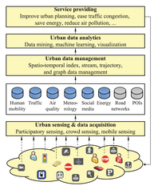
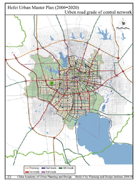
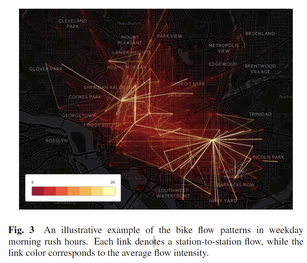
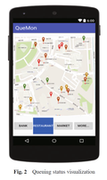
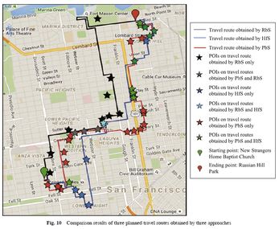
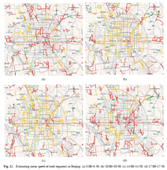
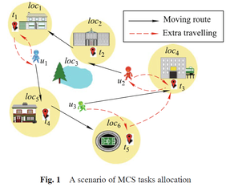
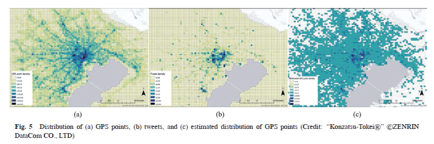
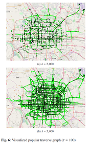

Current Visitors:
Frontiers of Computer Science Special Column on Smart Cities and Urban Computing
Guest Editors:
● Jingyuan Wang, Assistant Professor, Beihang University
● Bin Guo, Professor, Northwestern Polytechnical University
● Zhang Xiong, Professor, Beihang University
● Yu Zheng, Vice President & Chief Data Scientist, JD Finance
Perspective Urban computing: enabling urban intelligence with big data
Y. Zheng, “Urban computing: enabling urban intelligence with big data,” Frontiers of Computer Science, vol. 11, no. 1, pp. 1–3, 2017. Official Download

Urban computing is a process of acquisition, integration and analysis of big and heterogeneous data generated by a diversity of sources in urban spaces, such as sensors, devices, vehicles, buildings and humans, to tackle the major issues that cities face, e.g., air pollution, energy consumption and traffic congestion. Urban computing connects unobtrusive and ubiquitous sensing technologies, advanced data management and analytics models, and novel visualization methods, to create win-win-win solutions that improve urban environment, human life quality, and city operation systems. Urban computing also helps us understand the nature of urban phenomena and even predict the future of cities. Urban computing is an interdisciplinary field fusing computer science and information technology with traditional city-related fields, like urban planning, transportation, civil engineering, economy, ecology, and sociology, in the context of urban spaces.
An identification model of urban critical links with macroscopic fundamental diagram theory
W. Dong, Y. Wang, and H. Yu, “An identification model of urban critical links with macroscopic fundamental diagram theory,” Frontiers of Computer Science, vol. 11, no. 1, pp. 27–37, 2017. Official Download

How to identify the critical links of the urban road network for actual traffic management and intelligent transportation control is an urgent problem, especially in the congestion environment. Most previous methods focus on traffic static characteristics for traffic planning and design. However, actual traffic management and intelligent control need to identify relevant sections by dynamic traffic information for solving the problems of variable transportation system. Therefore, a city-wide traffic model that consists of three relational algorithms, is proposed to identify significant links of the road network by using macroscopic fundamental diagram (MFD) as traffic dynamic characteristics. Firstly, weighted traffic flow and density extraction algorithm is provided with simulation modeling and regression analysis methods, based on MFD theory. Secondly, critical links identification algorithm is designed on the first algorithm, under specified principles. Finally, threshold algorithm is developed by cluster analysis. In addition, the algorithms are analyzed and applied in the simulation experiment of the road network of the central district in Hefei city, China. The results show that the model has good maneuverability and improves the shortcomings of the threshold judged by human. It provides an approach to identify critical links for actual traffic management and intelligent control, and also gives a new method for evaluating the planning and design effect of the urban road network.
Understanding bike trip patterns leveraging bike sharing system open data
L. Chen, X. Ma, G. Pan, J. Jakubowicz et al., “Understanding bike trip patterns leveraging bike sharing system open data,” Frontiers of computer science, vol. 11, no. 1, pp. 38–48, 2017. Official Download

Bike sharing systems are booming globally as a green and flexible transportationmode, but the flexibility also brings difficulties in keeping the bike stations balanced with enough bikes and docks. Understanding the spatio-temporal bike trip patterns in a bike sharing system, such as the popular trip origins and destinations during rush hours, is important for researchers to design models for bike scheduling and station management. However, due to privacy and operational concerns, bike trip data are usually not publicly available in many cities. Instead, the station feeds about real-time bike and dock number in stations are usually public, which we refer to as bike sharing system open data. In this paper, we propose an approach to infer the spatio-temporal bike trip patterns from the public station feeds. Since the number of possible trips (i.e., origin-destination station pairs) is much larger than the number of stations, we define the trip inference as an ill-posed inverse problem. To solve this problem, we identify the sparsity and locality properties of bike trip patterns, and propose a sparse and weighted regularization model to impose both properties in the solution. We evaluate our method using real-world data fromWashington, D.C. and New York City. Results show that our method can effectively infer the spatio-temporal bike trip patterns and outperform the baselines in both cities.
Real-time and generic queue time estimation based on mobile crowdsensing
J. Wang, Y. Wang, D. Zhang, L. Wang, C. Chen, J. W. Lee, and Y. He, “Real-time and generic queue time estimation based on mobile crowdsensing,” Frontiers of Computer Science, vol. 11, no. 1, pp. 49–60, 2017. Official Download

People often have to queue for a busy service in many places around a city, and knowing the queue time can be helpful for making better activity plans to avoid long queues. Traditional solutions to the queue time monitoring are based on pre-deployed infrastructures, such as cameras and infrared sensors, which are costly and fail to deliver the queue time information to scattered citizens. This paper presents CrowdQTE, a mobile crowdsensing system, which utilizes the sensor-enhanced mobile devices and crowd human intelligence to monitor and provide real-time queue time information for various queuing scenarios. When people are waiting in a line, we utilize the accelerometer sensor data and ambient contexts to automatically detect the queueing behavior and calculate the queue time. When people are not waiting in a line, it estimates the queue time based on the information reported manually by participants. We evaluate the performance of the system with a two-week and 12-person deployment using commercially-available smartphones. The results demonstrate that CrowdQTE is effective in estimating queuing status.
Scenicplanner: planning scenic travel routes leveraging heterogeneous user-generated digital footprints
C. Chen, X. Chen, Z. Wang, Y. Wang, and D. Zhang, “Scenicplanner: planning scenic travel routes leveraging heterogeneous user-generated digital footprints,” Frontiers of Computer Science, vol. 11, no. 1, pp. 61–74, 2017. Official Download

To facilitate the travel preparation process to a city, a lot of work has been done to recommend a POI or a sequence of POIs automatically to satisfy users’ needs. However, most of the existing work ignores the issue of planning the detailed travel routes between POIs, leaving the task to online map services or commercial GPS navigators. Such a service or navigator in terms of suggesting the shortest travel distance or time, which cannot meet the diverse requirements of users. For instance, in the case of traveling by driving for leisure purpose, the scenic view along the travel routes would be of great importance to users, and a good planning service should put the sceneries of the route in higher priority rather than the distance or time taken. To this end, in this paper, we propose a novel framework called ScenicPlanner for route recommendation, leveraging a combination of geotagged image and check-in digital footprints from locationbased social networks (LBSNs). First, we enrich the road network and assign a proper scenic view score to each road segment to model the scenic road network, by extracting relevant information from geo-tagged images and check-ins. Then, we apply heuristic algorithms to iteratively add road segment and determine the travelling order of added road segments with the objective of maximizing the total scenic view score while satisfying the user-specified constraints (i.e., origin, destination and the total travel distance). Finally, to validate the efficiency and effectiveness of the proposed framework, we conduct extensive experiments on three real-world data sets from the Bay Area in the city of San Francisco, which contain a road network crawled from OpenStreetMap, more than 31 000 geo-tagged images generated by 1 571 Flickr users in one year, and 110 214 check-ins left by 15 680 Foursquare users in six months.
Online clustering of streaming trajectories
J. Mao, Q. Song, C. Jin, Z. Zhang, and A. Zhou, “Online clustering of streaming trajectories,” Frontiers of Computer Science, vol. 12, no. 2, pp. 245–263, 2018.Official Download

With the increasing availability of modern mobile devices and location acquisition technologies, massive trajectory data of moving objects are collected continuously in a streaming manner. Clustering streaming trajectories facilitates finding the representative paths or common moving trends shared by different objects in real time. Although data stream clustering has been studied extensively in the past decade, little effort has been devoted to dealing with streaming trajectories. The main challenge lies in the strict space and time complexities of processing the continuously arriving trajectory data, combined with the difficulty of concept drift. To address this issue, we present two novel synopsis structures to extract the clustering characteristics of trajectories, and develop an incremental algorithm for the online clustering of streaming trajectories (called OCluST). It contains a micro-clustering component to cluster and summarize the most recent sets of trajectory line segments at each time instant, and a macro-clustering component to build large macro-clusters based on micro-clusters over a specified time horizon. Finally, we conduct extensive experiments on four real data sets to evaluate the effectiveness and efficiency of OCluST, and compare it with other congeneric algorithms. Experimental results show that OCluST can achieve superior peformance in clustering streaming trajectories.
Mobile crowd sensing task optimal allocation: a mobility pattern matching perspective
L. Wang, Z. Yu, B. Guo, F. Yi, and F. Xiong, “Mobile crowd sensing task optimal allocation: a mobility pattern matching perspective,” Frontiers of Computer Science, vol. 12, no. 2, pp. 231–244, 2018. Official Download

With the proliferation of sensor-equipped portable mobile devices, Mobile CrowdSensing (MCS) using smart devices provides unprecedented opportunities for collecting enormous surrounding data. In MCS applications, a crucial issue is how to recruit appropriate participants from a pool of available users to accomplish released tasks, satisfying both resource efficiency and sensing quality. In ordern to meet these two optimization goals simultaneously, in this paper, we present a novel MCS task allocation framework by aligning existing task sequence with users’ moving regularity as much as possible. Based on the process of mobility repetitive pattern discovery, the original task allocation problem is converted into a pattern matching issue, and the involved optimization goals are transformed into pattern matching length and support degree indicators. To determine a trade-off between these two competitive metrics, we propose greedybased optimal assignment scheme search approaches, namely MLP, MDP, IU1 and IU2 algorithm, with respect to matching length-preferred, support degree-preferred and integrated utility, respectively. Comprehensive experiments on realworld open data set and synthetic data set clearly validate the effectiveness of our proposed framework on MCS task optimal allocation.
Integrating GPS trajectory and topics from Twitter stream for human mobility estimation
S. Miyazawa, X. Song, T. Xia, R. Shibasaki, and H. Kaneda, “Integrating gps trajectory and topics from twitter stream for human mobility estimation,” Frontiers of Computer Science, pp. 1–11. Official Download
Understanding urban dynamics and large-scale human mobility will play a vital role in building smart cities and sustainable urbanization. Existing research in this domain mainly focuses on a single data source (e.g., GPS data, CDR data, etc.). In this study, we collect big and heterogeneous data and aim to investigate and discover the relationship between spatiotemporal topics found in geo-tagged tweets and GPS traces from smartphones. We employ Latent Dirichlet Allocation-based topic modeling on geo-tagged tweets to extract and classify the topics. Then the extracted topics from tweets and temporal population distribution from GPS traces are jointly used to model urban dynamics and human crowd flow. The experimental results and validations demonstrate the efficiency of our approach and suggest that the fusion of cross-domain data for urban dynamics modeling is more practical than previously thought.

Popular Route Planning with Travel Cost Estimation from Trajectories
H. LIU, C. JIN, and A. ZHOU, “Popular route planning with travel cost estimation from trajectories,” Frontiers of Computer Science, Just Accepted Official Download

With the increasing number of GPS-equipped vehicles, more and more trajectories are generated continuously, based on which some urban applications become feasible, such as route planning. In general, popular route that has been travelled frequently is a good choice, especially for people who are not familiar with the road networks. Moreover, accurate estimation of the travel cost (such as travel time, travel fee and fuel consumption) will benefit a well scheduled trip plan. In this paper, we address this issue by finding the popular route with travel cost estimation. To this end, we design a system consists of three main components. First, we propose a novel structure, called popular traverse graph where each node is a popular location and each edge is a popular route between locations, to summarize historical trajectories without road network information. Second, we propose a self-adaptive method to model the travel cost on each popular route at different time interval, so that each time interval has a stable travel cost. Finally, based on the graph, given a query consists of source, destination and leaving time, we devise an efficient route planning algorithm which considers optimal route concatenation to search the popular route from source to destination at the leaving time with accurate travel cost estimation. Moreover, we conduct comprehensive experiments and implement our system by a mobile App, the results show that our method is both effective and efficient.